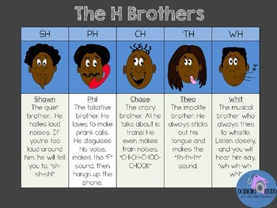
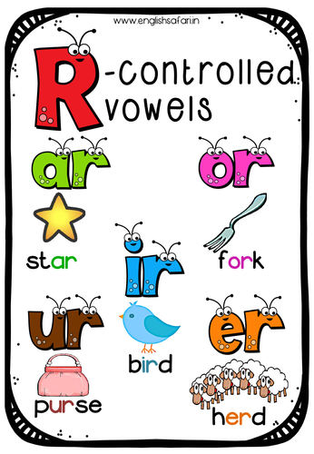
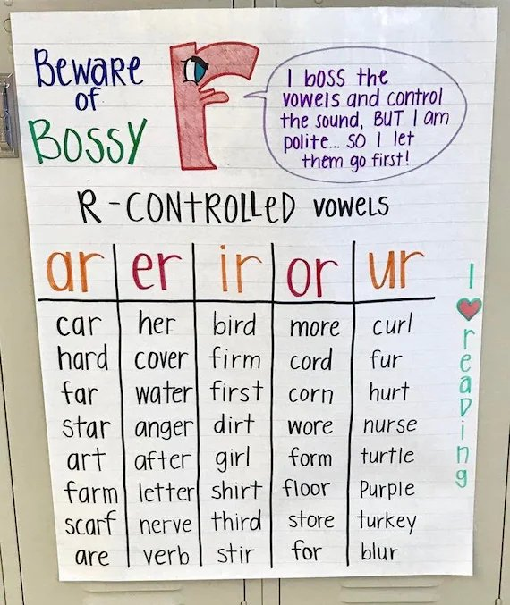
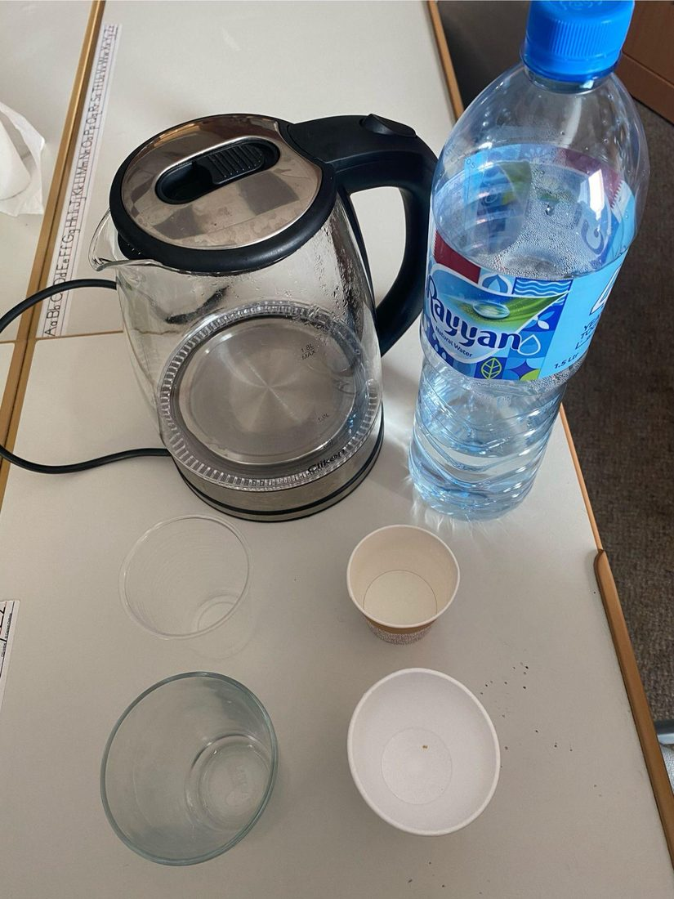
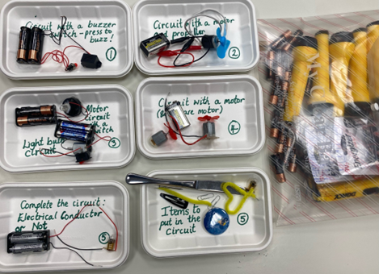

🧪 Week 6 of 35 — Unit 2: Changes in Matter
Week #: 6 of 35 (Unit 2, week 3 of 7) Dates: Oct 4 – Oct 8, 2026 | Unit: Unit 2: Changes in Matter | |
Unit Padlet
Unit 2: Grammar (From Words to Sentences)
Unit 2: Reading (Analyzing Literature)
✍️ Unit 2: Writing (Procedural Writing)
Unit 2: Explorers (Changes in Matter)
Practice Websites
Grammar Quest - Daily Oral Language
Maths Quest Pro - Master Your Math Facts!
Extra Math Resources
Unit 1: Math (Place Value and Operations)
Unit 2: Math (Measurement and Data)
Unit 4: Math (Multiplication and Division)
Unit 6: Math (Algebra, FDP, Fractions)
Class | Sunday | Monday | Tuesday | Wednesday | Thursday |
This week's updates / notes: | Tue Oct 6: PUE Forum — PD Day, students NOT in attendance (4-day week: Sun, Mon, Wed, Thu). Materials needed: bowls, cereal, milk, random bowl sizes, random spoon sizes - milk will be in Tina's fridge. (Old plan: these support the procedural-writing cereal hook, which in the new year runs in U2 W1.) Send Exploration Parent Letter Home · Send Procedural Writing Parent Letter (old plan sent these at the start of Unit 2). All Padlets are color coded for differentiation (Red = Low: approaching the grade-level standard). Grey italic text = added in the October 2026 template update (not in the original plan). | No notes for this day. | No students this day: any lessons planned below for this day need to be moved. | No notes for this day. | No notes for this day. |
Morning Meeting / SEL | Week #2 SEL Lesson - decide which day you prefer to do this lesson. THEME: KINDNESS 5A- Individual Activity to Whole Group Meeting 5B- One to One Enrichment 5C- Morning Worksheets PLG: Collaborator, Respectful, Communicator SEL - Kindness | Week #2 SEL Lesson - decide which day you prefer to do this lesson. THEME: KINDNESS 5A- Individual Activity to Whole Group Meeting 5B- One to One Enrichment 5C- Morning Worksheets PLG: Collaborator, Respectful, Communicator SEL - Kindness | Week #2 SEL Lesson - decide which day you prefer to do this lesson. THEME: KINDNESS 5A- Individual Activity to Whole Group Meeting 5B- One to One Enrichment 5C- Morning Worksheets PLG: Collaborator, Respectful, Communicator SEL - Kindness | Week #2 SEL Lesson - decide which day you prefer to do this lesson. THEME: KINDNESS 5A- Individual Activity to Whole Group Meeting 5B- One to One Enrichment 5C- Morning Worksheets PLG: Collaborator, Respectful, Communicator SEL - Kindness | Week #2 SEL Lesson - decide which day you prefer to do this lesson. THEME: KINDNESS 5A- Individual Activity to Whole Group Meeting 5B- One to One Enrichment 5C- Morning Worksheets PLG: Collaborator, Respectful, Communicator SEL - Kindness |
Literacy: Vocabulary & Spelling Standards | CC L.5.4, L.5.6 · EE.L.5.4, EE.L.5.6 | CC L.5.4, L.5.6, L.5.2.E, RF.5.3 · EE.L.5.4, EE.L.5.6, EE.L.5.2.H, EE.RF.5.3 | No students this day (see notes). | CC L.5.4, L.5.6 · EE.L.5.4, EE.L.5.6 | CC L.5.4, L.5.6, L.5.2.E, RF.5.3 · EE.L.5.4, EE.L.5.6, EE.L.5.2.H, EE.RF.5.3 |
Literacy: Vocabulary & Spelling Activities/Tasks (Differentiation) Routine: give the definition first (no guessing) → students share where they might use it, similar/different words. Morphology, examples/non-examples, synonyms/antonyms & more on the vocabulary cards: Vocabulary Padlet (incl. Spelling: words Mon · test Thu) | G5: previously — At an earlier time; before now. G3: possess — To have or own something; to hold as property or a quality. Unit: abundant — Existing or available in large quantities; plentiful. | G5: subsequently — After a particular event or time; following. G3: determine — To find out or decide something with certainty after thinking or investigating. Unit: condition — A state of being or a requirement that must be met for something to happen. Spelling — introduce Week 6 lists (practice all week). Low (Building Spelling Skills, List 6): be, see, got, she, sheep, shop, queen, green, bee, he High (Building Spelling Skills, List 6): strong, wrong, copy, cloth, problem, bottom, whole, explode, control, shown, bowl, October, smoky, coach, throat, toast, doughnut, foe | G5: duration — The length of time something lasts or continues. G3: scarce — Insufficient for the demand; not enough available. Unit: experiment — A scientific procedure carried out to test a hypothesis or discover something new. | G5: prior — Existing or coming before in time or order. G3: genuine — Truly what something is said to be; real, honest, and not fake. Unit: precede — To come before something in time, order, or position. | G5: meanwhile — At the same time that something else is happening. G3: plead — To make an emotional appeal or earnest request. Unit: suddenly — Quickly and without any warning. |
Literacy: Vocabulary & Spelling Assessment (Differentiation) | Quick check: Use today's word in a spoken or written sentence. Low: match the word to a picture or definition. Mid: complete a sentence frame. High: write an original sentence. | Quick check: Use today's word in a spoken or written sentence. Low: match the word to a picture or definition. Mid: complete a sentence frame. High: write an original sentence. | No students this day (see notes). | Quick check: Use today's word in a spoken or written sentence. Low: match the word to a picture or definition. Mid: complete a sentence frame. High: write an original sentence. | |
Literacy: Reading Standards | CC RF.5.3, RL.5.3 · EE.RF.5.3, EE.RL.5.3 | CC RL.5.3 · EE.RL.5.3 | No students this day (see notes). | CC RF.5.3, RL.5.5 · EE.RF.5.3, EE.RL.5.5 | CC RF.5.3, RL.5.5 · EE.RF.5.3, EE.RL.5.5 |
Literacy: Reading Activities/Tasks (Differentiation) | Phonics: Consonant digraphs - introduce the 'H Brothers'. Explain each; once they have it, explain that these sounds can come at the end of words too. Or use these H Brothers slides. 
Guided Reading: Introduction to Story Elements. Play the Story Elements video or use the SeeSaw lesson. Introduce characters (who is in the story), setting (where and when the story takes place), and plot (the sequence of events that happen in the story). As you read, stop to ask: Who are the main characters? Where is the story taking place? What is happening so far? Rotations: SeeSaw: Story Elements Quiz · Story Elements · Story Elements Lesson - IXL: G3 Story Elements · G4 Story Elements · G5 Story Elements - Google Classroom: KAMI WS folder - Boom Cards: Story Elements - Claude: Story Elements - RazKids, EPIC, Book Bag. Differentiation: Teacher should choose from the variety of above activities to best suit students' abilities. | Guided Reading: Introduction to Conflict and Resolution. Define conflict (the problem in the story) and resolution (how the problem is solved). Provide examples of common types of conflict (character vs. character, character vs. nature, character vs. self, etc.). Read aloud and discussion: read another short story (non-fiction). After reading, have students identify the conflict and resolution; discuss different types of conflict and how they affect the story. Rotations: see the list from Sunday or the differentiation row below. Differentiation: Teacher should choose from the variety of above activities to best suit students' abilities. | Phonics: Teach the Bossy R / r-controlled vowels: BrainPOP Jr video · Jack Hartmann's Bossy R · Everyday Play and Say   SeeSaw: Compound Words (analytical) · Controlled R · Controlled R (easy) Guided Reading: Review what conflict and resolution mean and their role in a story. Introduce plot structure - beginning, middle and end - using a plot diagram: the beginning introduces the characters and setting, the middle includes the conflict and rising action, and the end wraps up with the resolution. Create an anchor chart with beginning, middle, end. Rotations: see the list from Sunday or the differentiation row below. Differentiation: Teacher should choose from the variety of above activities to best suit students' abilities. | Phonics: SeeSaw Reading/Compound Words · SeeSaw Controlled R Bossy Finger Game: have a list of words ready, some with bossy 'r' and some with 'r' but not bossy. Read the words aloud; students decide if the 'r' is bossy - if it is, they point a bossy finger at you; if not, no pointing at all! Bossy 'r' words: jar, art, farm, store, corn, orange, dirt, stir, girl, turn, fur, hurt, germ, her. Guided Reading: Quick review of beginning, middle and end. Introduce rising action (events leading up to the most exciting part), climax (the turning point or most exciting part of the story) and falling action (events after the climax that lead to the resolution). Use a plot diagram to show where each fits into the story structure. Google Classroom: Bossy R Drag and Drop · Bossy R Task Cards Rotations: see the list from Sunday or the differentiation row below. Differentiation: Teacher should choose from the variety of above activities to best suit students' abilities. | Phonics: Bossy R Kahoot Guided Reading: Review / catch-up. Rotations: see the list from Sunday or the differentiation row below. Differentiation: Teacher should choose from the variety of above activities to best suit students' abilities. |
Literacy: Reading Assessment (Differentiation) | Exit check: Name the main character, the setting and one plot event from today's story. Low: point to pictures or a word bank. Mid: answer with a sentence frame. High: write one sentence for each element. | Exit check: Short task on today's focus: compare and contrast characters, settings or events using details. Low: point to or say the answer with picture/word-bank support. Mid: answer with a sentence frame. High: write a short answer using evidence from the text. | No students this day (see notes). | Exit check: Short task on today's focus: how parts of a story fit together (story structure). Low: point to or say the answer with picture/word-bank support. Mid: answer with a sentence frame. High: write a short answer using evidence from the text. | Exit check: Short task on today's focus: read and comprehend grade-band literature and informational text. Low: point to or say the answer with picture/word-bank support. Mid: answer with a sentence frame. High: write a short answer using evidence from the text. |
Literacy: Writing / Language Standards (Language Sun & Tue · Writing Mon & Wed · Thu catch-up) | CC L.5.2.A · EE.L.5.2.A | CC W.5.2 · EE.W.5.2 | No students this day (see notes). | CC W.5.2, W.5.5 · EE.W.5.2, EE.W.5.5 | CC L.5.2.A, W.5.2, W.5.5 · EE.L.5.2.A, EE.W.5.2, EE.W.5.5 |
Literacy: Writing / Language Activities/Tasks (Differentiation) IXL this week: Low: Capitalize the names of people and pets (G1) High: Capitalizing the names of places and geographic features (G2) Stretch: Capitalizing the names of places and geographic features (G4) · Correct capitalization errors (G5) | Grammar (Sun) — Capitalization — First Word & Pronoun I OBJ: Capitalize first word of every sentence and the pronoun I Packets — Low (K-1): K: L1.2 Capital/Lowercase Letters, K: L3.1 Cap First Word, K: L3.2 Cap Pronoun I, G1: L2.1 Cap First Word, G1: L2.2 Cap Pronoun I · Mid (2-3): G2: L2.1 Cap First Word, G3: L2.1 Cap First Word in a Sentence · High (4-6): G4: L2.1 Cap Names and Titles (extends base rule), G5: L2.6 Sentences and Direct Quotations, G6: L2.5 Sentences and Direct Quotations K: connects letter knowledge to cap rules. | Writing — Apply to a game how-to (pictures + labels) Model turning something you know into clear steps; students pick a game, rehearse the rules aloud with a partner, then write "How to Play a Game" in numbered order with pictures and labels. Grammar link: capitalization — game title + first word of each step. TWR: "so that" purpose sentences ("Shuffle the cards so that no one knows the order.") — add ONE 'so that' to a step to explain why it matters. Resources: Game how-to template (Padlet) — word banks: command verbs, time connectives IXL: Put the sentences in order (G2) — Order of events in informational texts (G3) — Stretch: G4 — Order sentences (G5) | Grammar (Tue) — Capitalization — Names, Titles & Places OBJ: Capitalize names of people, titles, and geographic locations Packets — Low (K-1): K: L3.3 Cap Names, K: Review: Capitalization, G1: L2.3 Cap Names, G1: L2.4 Cap Place Names · Mid (2-3): G2: L2.2 Cap Names of People/Pets/Products, G2: L2.3 Cap Titles, G3: L2.2 Cap Names and Titles, G3: L2.3 Cap Place Names · High (4-6): G4: L2.1 Cap Names and Titles, G4: L2.2 Cap Place Names, G5: L2.3 Proper Nouns — Streets/Places/People, G5: L2.4 Words Used as Names, G5: L2.5 Titles and Subjects, G6: L2.2 Historical Events/Languages/Nationalities, G6: L2.3 Organizations/Government, G6: L2.4 Titles/Geographic Names G5-G6: extensive proper noun categories. | Writing — Test your how-to on a reader Students finish a how-to (game or second mug recipe), then swap with a partner who tries to follow the steps exactly; writers mark missing/unclear steps and fix them. TWR: expansion as repair — a broken step gets expanded with the missing answer (Which one? How? Where?) instead of a full rewrite. Differentiation: Low/Med read the steps aloud with the partner; High rewrites one vague step to be more precise. Resources: Procedural Texts PPT (Padlet) — word banks: command verbs, time connectives | Catch-up day — reteach or extend this week's grammar and writing; finish unfinished drafts; assign this week's IXL practice (links in the left column: Low = reteach, High = consolidate, Stretch = extension). |
Literacy: Writing / Language Assessment (Differentiation) | Language check: Write 3 to 5 sentences that apply today's rule; use this week's IXL skill. Low: K-1 packet page with teacher support. Mid: Grades 2-3 packet page. High: Grades 4-6 packet page or IXL Stretch. | Writing check: Check today's writing against the co-built rubric (one target from today's lesson). Low: oral rehearsal first, then a sentence frame or labelled picture. Mid: word bank and a partner check. High: independent, plus one stretch goal. | No students this day (see notes). | Writing check: Check today's writing against the co-built rubric (one target from today's lesson). Low: oral rehearsal first, then a sentence frame or labelled picture. Mid: word bank and a partner check. High: independent, plus one stretch goal. | Catch-up check: Check IXL SmartScores on this week's language skills and conference with 2 to 3 writers on unfinished drafts. |
Math Standards (pacing W05, from the Awsaj Math Curriculum) | STANDARD 1. Solve problems with multiplication: 5.NBT.B.5 (EE: M.EE.5.NBT.5); 4.OA.A.3 (EE: M.EE.4.OA.3) 2. Short division: 5.NBT.B.6 (EE: M.EE.5.NBT.6) 3. Division using factors: 5.NBT.B.6 (EE: M.EE.5.NBT.6); 3.OA.B.5 4. Multiply up to a 4-digit number by a 1-digit number: 5.NBT.B.5 (EE: M.EE.5.NBT.5) | PRIORITY 1. Square and cube numbers: 6.EE.A.1 2. Multiply up to a 4-digit number by a 2-digit number: 5.NBT.B.5 (EE: M.EE.5.NBT.5) 3. Solve problems with multiplication: 5.NBT.B.5 (EE: M.EE.5.NBT.5); 4.OA.A.3 (EE: M.EE.4.OA.3) | INTERVENTION 1. Primes to 100: 4.OA.B.4 (EE: M.EE.4.OA.4) 2. Multiply up to a 4-digit number by a 2-digit number: 5.NBT.B.5 (EE: M.EE.5.NBT.5) | ||
Math Activities/Tasks (Differentiation) Pacing W05 · B2 Addition, subtraction, multiplication and division W03–W08 | STANDARD · ~4 new / wk 1. Solve problems with multiplication 5.NBT.B.5 4.OA.A.3 ▶ VIDEO · GUIDE · SLIDES · PPT · LESSON · SHEET · DISPLAY · ANSWERS · T/F · PRE-TEACH · TA SHEET · TA ANS · TRANSCRIPT 2. Short division 5.NBT.B.6 ▶ VIDEO · GUIDE · SLIDES · PPT · LESSON · SHEET · DISPLAY · ANSWERS · T/F · PRE-TEACH · TA SHEET · TA ANS · TRANSCRIPT 3. Division using factors 5.NBT.B.6 3.OA.B.5 ▶ VIDEO · GUIDE · SLIDES · PPT · LESSON · SHEET · DISPLAY · ANSWERS · T/F · PRE-TEACH · TA SHEET · TA ANS · TRANSCRIPT 4. Multiply up to a 4-digit number by a 1-digit number 5.NBT.B.5 ▶ VIDEO · GUIDE · SLIDES · PPT · LESSON · SHEET · DISPLAY · ANSWERS · T/F · PRE-TEACH · TA SHEET · TA ANS · TRANSCRIPT 1× support block — pick from the panel below Differentiation: Each lesson includes partner practice, common misperceptions, independent practice, and challenge questions for differentiation. | PRIORITY · ~3 new / wk 1. Square and cube numbers 6.EE.A.1 ▶ VIDEO · GUIDE · SLIDES · PPT · LESSON · SHEET · DISPLAY · ANSWERS · T/F · PRE-TEACH · TA SHEET · TA ANS · TRANSCRIPT 2. Multiply up to a 4-digit number by a 2-digit number 5.NBT.B.5 ▶ VIDEO · GUIDE · SLIDES · PPT · LESSON · SHEET · DISPLAY · ANSWERS · T/F · PRE-TEACH · TA SHEET · TA ANS · TRANSCRIPT 3. Solve problems with multiplication 5.NBT.B.5 4.OA.A.3 ▶ VIDEO · GUIDE · SLIDES · PPT · LESSON · SHEET · DISPLAY · ANSWERS · T/F · PRE-TEACH · TA SHEET · TA ANS · TRANSCRIPT 1× support block — pick from the panel below Differentiation: Each lesson includes partner practice, common misperceptions, independent practice, and challenge questions for differentiation. | INTERVENTION · ~2 new / wk 1. Primes to 100 4.OA.B.4 ▶ VIDEO · GUIDE · SLIDES · PPT · LESSON · SHEET · DISPLAY · ANSWERS · T/F · PRE-TEACH · TA SHEET · TA ANS · TRANSCRIPT 2. Multiply up to a 4-digit number by a 2-digit number 5.NBT.B.5 ▶ VIDEO · GUIDE · SLIDES · PPT · LESSON · SHEET · DISPLAY · ANSWERS · T/F · PRE-TEACH · TA SHEET · TA ANS · TRANSCRIPT 2× support block — pick from the panel below Differentiation: Each lesson includes partner practice, common misperceptions, independent practice, and challenge questions for differentiation. | ||
Math: Support Block Activities/Tasks (pick one) | Y1/KG · Subtraction on a number line · Y2/Gr.1 · Add two 2-digit numbers (across a 10) · Y3/Gr.2 · Complements to 100 · Y4/Gr.3 · The 3, 6 and 9 times-tables · Y4/Gr.3 · Informal written methods for multiplication · Y4/Gr.3 · Divide a 2-digit number by a 1-digit number (1) · Y4/Gr.3 · Divide a 2-digit number by a 1-digit number (2) · Y4/Gr.3 · Correspondence problems · Y5/Gr.4 · Factors · Y5/Gr.4 · Prime numbers · Y5/Gr.4 · Multiply by 10, 100 and 1,000 · Y5/Gr.4 · Divide by 10, 100 and 1,000 · Y5/Gr.4 · Multiply a 3-digit number by a 2-digit number · Y5/Gr.4 · Short division · Y5/Gr.4 · Divide a 4-digit number by a 1-digit number | ||||
Math Assessment (Differentiation) | IXL Formative Pre-Test | Exit check: 2 to 3 questions from each strand's SHEET or T/F slide at the end of the lesson. Intervention: with the TA sheet and concrete materials. Priority: partner then independent. Standard: independent plus the challenge question. | No students this day (see notes). | Exit check: 2 to 3 questions from each strand's SHEET or T/F slide at the end of the lesson. Intervention: with the TA sheet and concrete materials. Priority: partner then independent. Standard: independent plus the challenge question. | IXL Formative Assessment |
Science and/or Social Studies Standards Explore | 5-PS1-3, 5-PS1-4 | 5-PS1-3, 5-ETS1-3 | No students this day (see notes). | 5-PS1-4, 5-ETS1-3 | 5-PS1-3, 5-PS1-4, 5-ETS1-3 |
Activities/Tasks (Differentiation) Explore 3-day plan (Mon–Wed) Bridge to the Science Fair IXL this week: Low: Support a Hypothesis with Observations (Gr 3) · High: Compare Physical & Chemical Changes (Gr 4, review) Stretch: Particles of Matter (Gr 5) · Conservation of Matter Using Graphs (Gr 4) | Review / catch-up — revisit last week's Explorer learning; finish unfinished investigations or SeeSaw posts; preview this week's topic. | Mon · Investigate + Practice a Fair Test: Thermal Insulators 1. Review + connect — Recall yesterday's chemical-change work (baking soda + vinegar; reversible vs. irreversible changes). Explain that today's investigation tests a different material property — how well a material holds in heat — using the same fair-test process. 2. Hook — Watch Conductors and Insulators, pausing to ask: Why do we use metal pots and pans? What happens if we leave a metal spoon in a hot pot? 3. Teach — Explain that "thermal" means gaining or losing heat; introduce insulator vs. conductor. 4. Investigate — Pour hot water into paper, styrofoam, plastic, and glass cups. Predict, then check: what happens, how does each feel? 5. Fair-test connection — Point out this is a fair test: only the cup material changes; the water amount and time stay the same. Record on the Science Fair template. Objective: 5-PS1-2: Measure and compare quantities to provide evidence that materials conduct or insulate heat differently. Explorer photos / resources (from last year's plans): Make use of the Science Fair template:  | Tue · Model the Fair Test: Carbonated Liquids 1. Review — Revisit yesterday's cup results; recall the fair-test rule it modeled: change one thing, keep everything else the same. 2. Connect — Look at two bottles of water — sparkling and still. Taste and describe (small amounts, still first, then sparkly); introduce the word carbonated (forced carbonation vs. fermentation). Ask: how could we fair-test what's really in a fizzy drink? 3. Investigate — Run the carbonated-liquids fair test as a class: mix lemon juice + baking soda, then baking soda + vinegar, then baking soda + water. Only the liquid changes each time — the amount of baking soda, container, and time all stay the same. 4. Hypothesis — Write the hypothesis in IF…THEN…BECAUSE form: “If baking soda is added to lemon juice, vinegar, and water, then the lemon juice and vinegar will not act the same as water, because they are acidic and will react with the baking soda (a base), while water (neutral) will show little or no reaction.” 5. Discuss — Once the gas escapes, can we get it back? This change is irreversible. Objective: Can carry out a fair test and write a hypothesis in IF…THEN…BECAUSE form. Resources — Vinegar & Bicarbonate of Soda Investigation Pack (Twinkl — replaces broken PDF) Explorer photos / resources (from last year's plans): Conductors – a conductor is a material that has electrons moving freely. This means that, when electricity is passed through, the electrons move, and the electricity passes through the material. Insulators – an electrical insulator is a material that does not have electrons flowing freely, making it almost impossible to conduct electricity.  | Wed · Practice Write-Up: Using the Science Fair Template 1. Review — Look back at Tuesday's carbonated-liquids investigation and hypothesis. 2. Guided write-up — As a class, complete a full write-up of the carbonated-liquids investigation on the Science Fair template: question, hypothesis, materials, procedure, results (as a simple graph), and conclusion. 3. Discuss — What makes a strong conclusion? Model: "My hypothesis was ___ because ___. The data showed ___." Was the reaction with water different from the reaction with vinegar and lemon juice? Why? 4. Preview — Explain that starting Monday, each student chooses their own investigation question for the Science Fair. Objective: Can complete every section of the Science Fair template using a shared class investigation as a model. Resources — Scientific Process Recording Sheet · ‘The Scientific Method’ – STEM & Beyond | Review / catch-up — consolidate Mon–Wed learning; complete recordings/reflections; reteach or extend as needed. |
Assessment (Differentiation) Explore | Review check: Students explain one thing they learned last week about physical and chemical changes, using a key word from the unit. Low: point and say with a picture. Mid: sentence frame. High: written explanation. | Assessment: What lets us know a material is a good insulator? Differentiation: Can say what makes an insulator with support / name 2 insulators with some support / name more than 2 independently. | Assessment: Write a hypothesis for the carbonated-liquids investigation using the sentence frame. Differentiation: Complete the frame with support / write with a word bank / write independently. | Assessment: Locate and correctly complete each section of the template (question, hypothesis, materials, procedure, results, conclusion). Differentiation: Complete sections with sentence starters / with a partner / independently. | Review check: Students explain one thing they learned in Explore this week, using a key word from the unit. Low: point and say with a picture. Mid: sentence frame. High: written explanation. |